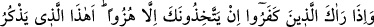
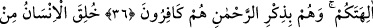
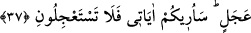
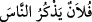

İNSAN
ACELECİ YARATILMIŞTIR
36. (Rasûlüm!) Kâfirler seni gördükleri zaman: “Sizin ilâhlarınızı diline dolayan
bu mu?” diyerek seni hep alaya alırlar. Halbuki onlar, çok esirgeyici Allâh’ın
Kitabını inkâr edenlerin ta kendileridir.
37. İnsan, aceleci (bir tabiatta) yaratılmıştır. Size âyetlerimi göstereceğim;
benden acele istemeyin.
Rasûlüm! “Kâfirler” yâni müşrikler “seni gördükleri zaman” birbirlerine: “Sizin
ilâhlarınızı” putlarınızı “diline dolayan” kötü bir şekilde zikreden, onların mâbûd
olduğunu bâtıl gören ve onlara ibâdeti çirkin sayan “bu mu?” diyerek seni hep alaya
alırlar.” Yâni onlar seni alaya almaktan başka bir şey yapmazlar. Burada kastedilen,
onlar sana istihza ile ‘peygamber’ derler, demektir.
Bu ifâde, onların Hz. Peygamber (a.s.) ile muâmelelerini alay etmekle sınırladıkları
mânâsınadır. Yoksa ilk olarak akla geldiği üzere O’nun alaya alınmış olmasını alay
konusu edinmekle sınırladıkları anlamına değildir.
Nebî (a.s.) Ebû Cehil’in yanına uğradığı zaman Ebû Cehil güldü ve onunla alay
edercesine beraberinde bulunan Araplar’ın ileri gelenlerine: “İşte, Abdü Menaf’ın
peygamberi!” dedi. İşte bunun üzerine bu âyet indi.
“ denir. Bunun mânâsı, o insanların gıyâbında konuşuyor ve ayıplarını
anıyor, demektir. Nitekim Bahru’l-ulûm’da böyle denilmiştir. “Yezküru” kelimesinin
mutlak olarak zikredilmesi, durumun buna delâletinden dolayıdır. Çünkü düşmanın
anması, ancak yerme ve kötüleme ile olur.
“Halbuki onlar, çok esirgeyici Allâh’ın Kitabını inkâr edenlerin ta kendileridir.”
Yâni onlar, faydası da zararı da olmayan putlarını Nebî (a.s.)’ın kötü sıfatlarla anmasını
ayıplıyorlar. Oysa onlar, kendilerine her türlü nimetleri veren Allâh’ın gereği gibi
birliğinin anılmasını inkâr ediyorlar. Şu halde ayıplanmaya ve inkâr edilmeye lâyık olan
onlardır.
Âyette işâret vardır ki kim küfür perdesiyle Allah’tan perdelenmişse, Hakk’ın
havâssına/has kullarına ancak istihzâ ve inkâr gözü ile bakar. Çünkü peygamberlerden
ve evliyâdan olan Hakk’ın havâssı, onlara çirkin görünür. Çünkü onlar, kendileri gibi
Allâh’ı bırakıp dünyanın makamı, malı ve diğer şehvetlerinden bir takım ilahlar